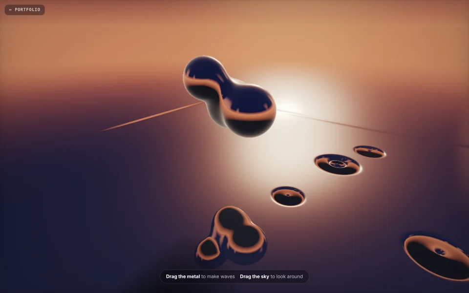
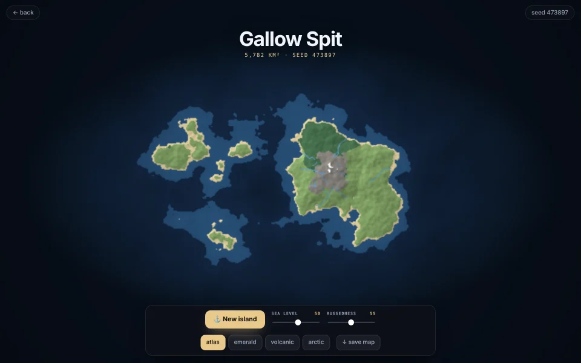
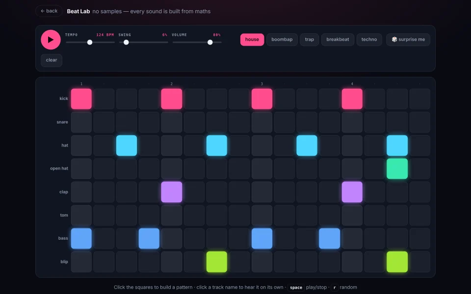

Golden hour
Mohamed Sucule
I design and build interfaces people can feel.
Here are eight projects I designed and built, from a game lit by its own flame to a restaurant system at full service, plus a few smaller experiments. Every one runs live in your browser. As you scroll, the sky goes from sunset to sunrise.
Frontend engineer · Birmingham, UK · 4+ years at Capgemini and SynchrTrade
After dark
Ember
An action game in the dark, where your flame is your light and your life.
Three acts, three bosses and nine ash-stones, in a kingdom where the only light is the one you carry. Take a hit and it burns lower, and the dark comes closer.
- Your health is your light. You feel how hurt you are before you read it, in how far you can see.
- Shadows that swing. Light is cast from the flame to every corner in reach, every frame, so the room moves as you do.
- Fair you can see. Every attack is drawn on the floor before it lands. The tests play the whole game and fail if any blow gives less than 0.3 seconds of warning.
- Nothing downloaded. No engine, and no image or sound file: every room, shadow and note of the score is made as you play.
Saturday service
Covers
A restaurant’s floor plan and bookings, opened at the busiest moment of the week.
Every booking demo opens on an empty grid, and an empty restaurant tells you nothing. This one drops you in at 19:42 on a Saturday: thirty-one bookings, eleven parties eating, one running late, and a double booking on table 2 to sort out.
- Every no comes with a way forward. Drag a party to a table that is wrong for them and it says why, and what to do instead.
- Nobody already seated gets moved. When the answer is no, it looks for a rearrangement that makes it a yes, and shows what that would change first.
- Press play and the evening runs. Parties arrive, eat and leave while you watch.
Open Covers“Table 1 seats 2. This is a party of 6. → 30 is free at 20:30.”
A table for two
Front Desk
An AI receptionist that answers the phone, so the staff can keep serving.
Ask for a table, typed or spoken. It checks the real plan in Covers, offers the nearest free time when yours has gone, and hands over to a person when it should.
- One question at a time, like a good host. It remembers what you have said, and copes when you change your mind halfway through.
- Kind when it is lost. If it cannot follow you three times in a row, it offers a call back instead of going round in circles.
- Private by design. The speech recognition runs on your own device. Nothing you say leaves the page.
Watch commenced
Nightshift
A short horror story, told as a coastal watch log from November 1987.
It opens with the weather and the shipping, and it does not stay there. There is no game and nothing to press: you scroll, and the page reads you scrolling.
- Deliberately boring. No flicker, no heartbeat, no dark theme. It looks like an archive transcription, so nothing warns you.
- The page is part of the story. It notices how you read, and even the scroll bar has a part to play.
- Best alone, with the sound on. It takes about five minutes.
The worst of it
The Lamplighter
One night at a lighthouse, told by scrolling and drawn as you read.
A keeper’s last winter before a machine replaces him, in five minutes. The sun goes down, the gale gets up, the rain comes sideways, and the light keeps turning.
- Scrolling is time. The scroll bar is the hour of the night, and the sky, the wind, the rain and the sea all follow it. This page borrows the idea.
- The light keeps turning, once every 11.2 seconds, whether or not you are reading. The place goes on when you stop.
- Drawn, not downloaded. The sky, the sea, the tower, the rain, the beam and the foghorn are all code. There is not an image or a sound file in its folder.
Small hours
Things I make at four in the morning
Small pieces, each one idea taken as far as it will go. Pick one up and play with it.
-

Mercury liquid metal under a sunset. drag it. No 3D model, no texture: every pixel is worked out sixty times a second. -

Islandsmith one number, one new world. Coastline, mountains, forests, rivers and a name, all grown from a single seed. -

Beat Lab a drum machine with no sounds in it. Every kick, snare and hi-hat is synthesised from scratch as it plays.
First light
OKLCH Studio
Colour comes back. A palette builder for colours that stay readable.
Most palette tools work in HSL, where yellow and navy can claim the same lightness, so a palette that looks fine in the design file fails the accessibility audit. This one works the way eyes do.
- Evenly spaced means evenly seen. Each step down a ramp is the same visible step in every colour family.
- Readable, and checked. Every pair of colours is scored for contrast against two standards, WCAG 2.1 and APCA.
- Honest about compromise. When a colour cannot be shown on an ordinary screen, it says what was changed to make it fit.
The morning after
The Room
A locked-room murder mystery you solve by reasoning, not guessing.
Edmund Harkness is dead at his desk. The door was locked from the inside, and the key was in his pocket.
- Look, don’t guess. Nineteen things to examine, four people to question, five contradictions hidden among them, and not one multiple-choice question.
- A notebook that notices. When two facts disagree, it sets them facing each other with a but between them.
- Name somebody. When you think you know, say who.
Sunrise
Your Place
Any place on Earth, as a poster you would hang.
Type a town, a street or an address, pick a style, and download a file ready to print. A present people actually want, drawn in the browser from OpenStreetMap.
- Five looks, not fifty settings. Noir & gold, Paper, Blueprint, Ink and Terracotta: pick one and the whole poster changes with it.
- The print matches the screen. One drawing pass makes both the preview and the 300 dpi file, line for line.
- Quick enough to play with. The first poster appears in 0.39 seconds. It used to take 41.7.

Good morning
Good morning. This is who I am.
I’m Mohamed, a frontend engineer in Birmingham, and I design as much as I build.
For four years I have built web applications at Capgemini and SynchrTrade, for product teams and for public-sector clients under SC clearance. In my own time I make things like the ones you have just scrolled past: interfaces where the feeling is the point, built from scratch so every detail is mine to get right.
- 4+ years commercial experience
- SC security cleared
- UK right to work
Design and code in one pair of hands
From the first sketch to the shipped interface: layout, type, motion, colour and sound, and the code that makes them hold up.
A point of view
A restaurant system that opens mid-service. A story where scrolling is time. I start from how a thing should feel, then make it work.
Accessible by default
Every page here is checked with axe in light and dark, works from the keyboard, and calms down when you ask for less motion.
Built to last
Over 850 tests run before every deploy of this site, and the React apps run their own unit and end-to-end suites.
Where I have worked
July 2022 – present
Software Engineer · Capgemini
Responsive front-end features in React, TypeScript and JavaScript, integrated with production services through REST APIs, for major public- and private-sector clients, including programmes under SC clearance. Requirements worked out directly with senior stakeholders; delivery in Agile teams from discovery to live support.
2021 – 2022
Web Developer · SynchrTrade
Responsive web interfaces in React and JavaScript for commercial users, built with back-end engineers and designers inside agile sprints, and refined as feedback and requirements changed.
BEng Mechanical Engineering, Aston University (2021) · AWS Certified Cloud Practitioner · Microsoft Azure AI Fundamentals (AI-900) · GitLab Certified
Let’s make something.
If you are hiring for a frontend or UI role, or have an interface that should feel better than it does, I would like to hear about it.
mohamedsucule@gmail.com